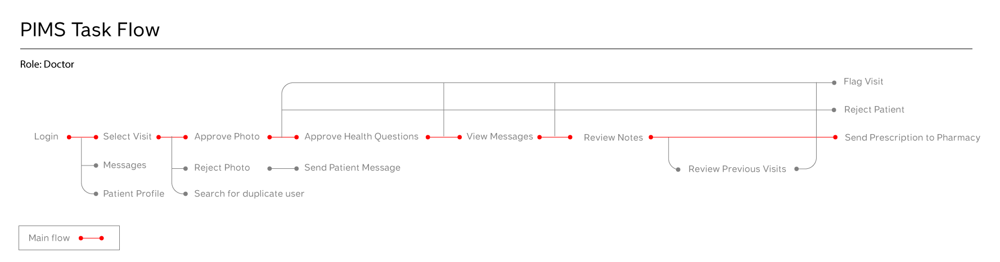
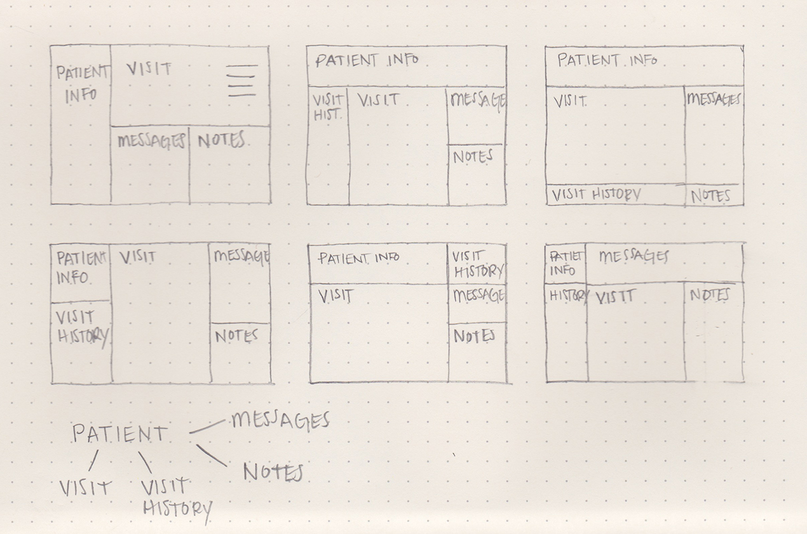
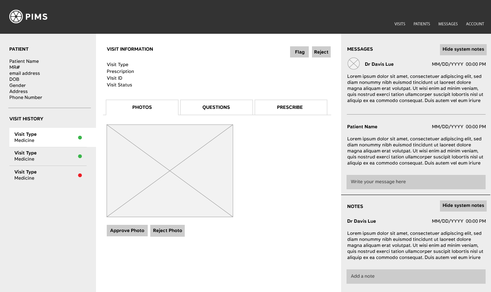
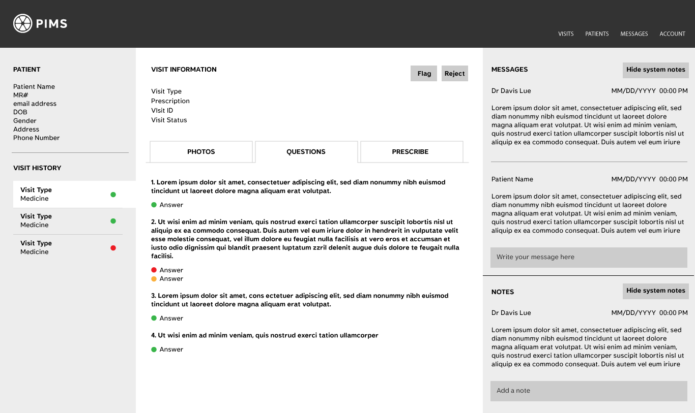
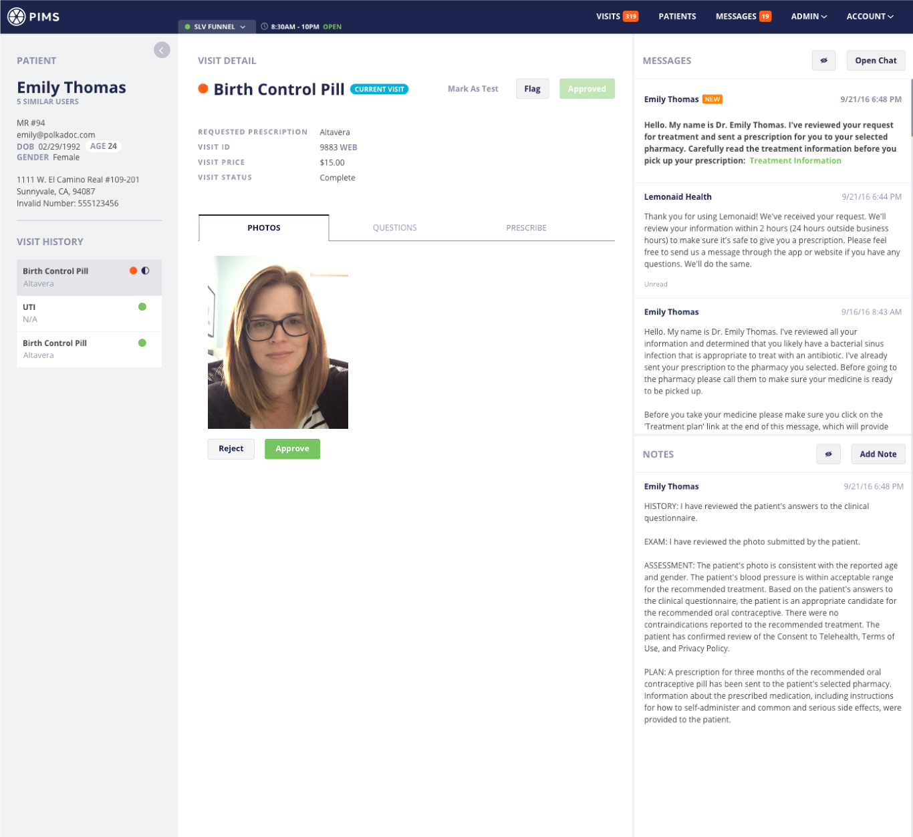
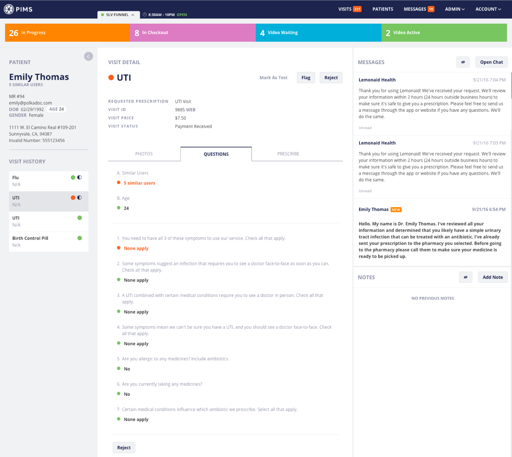
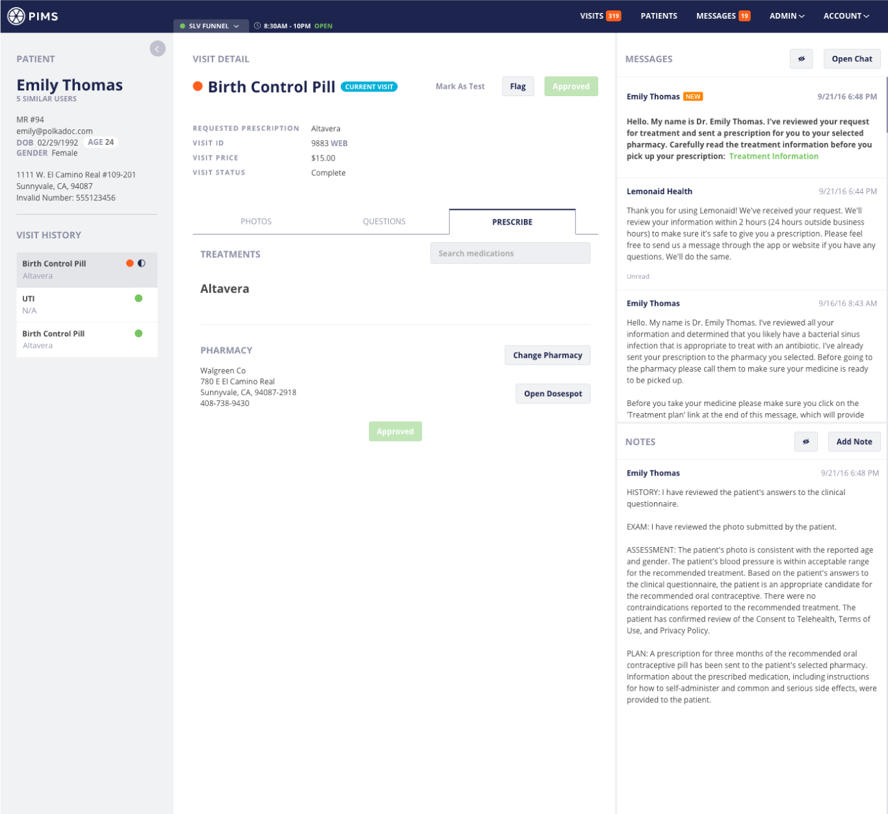
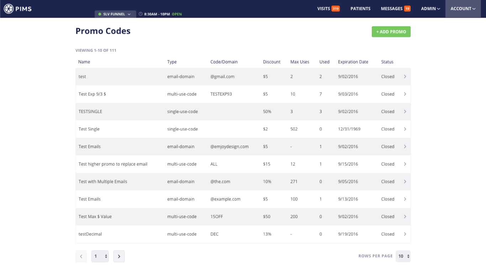
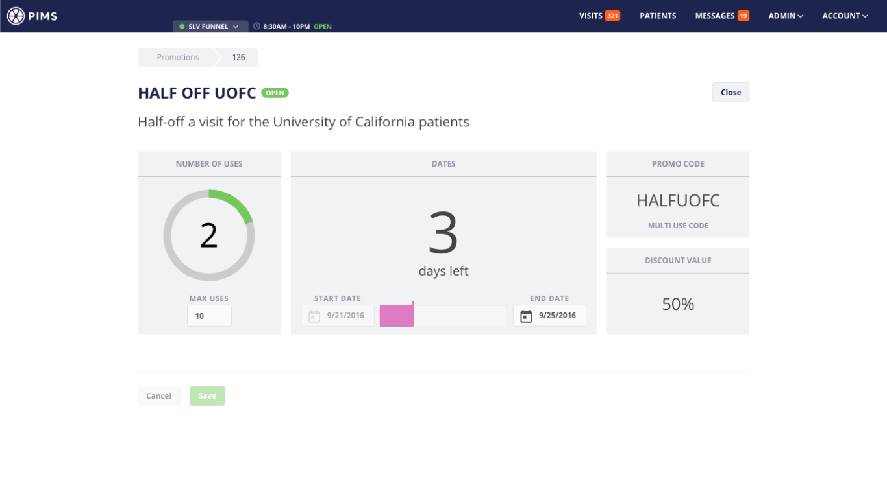
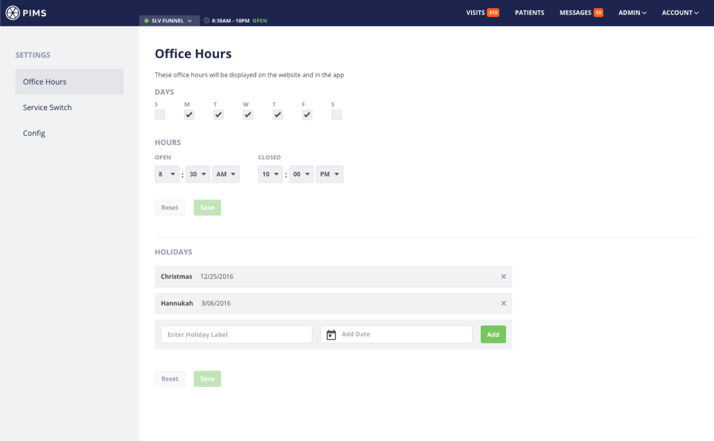

Research & UX Lead
1 Visual Designer
- Reduced average process time from 5 min to 30 sec
- Streamlined doctor review process
Led research, UX design, and usability testing for the doctor-facing platform that streamlined patient processing from 5 minutes to 30 seconds
Context
Lemonaid's mission is to provide affordable healthcare to everyone.
We can achieve this by boosting the doctor to patient ratio so that one doctor can treat many patients at once. An essential tool for providing this level of care is PIMS (patient information management system).
Most online healthcare services require a video call with a doctor which can take up to 30 minutes. This is convenient for the patient but not for the doctor.
For the initial launch of the consumer app, the doctors used a system that was quickly built by the developers. As patient numbers continued to grow, the doctors struggled to treat them promptly. We needed to improve the patient processing speed to keep up with the growing number of patients.
Design Process
I observed doctor workflow sessions to identify friction points and conducted interviews exploring liked features, needed improvements, and accessibility gaps.
Since the doctors use this system all day, my goal was to identify pain points.
Two critical pain points:
- Reviewing previous patient visits
- Accessing patient notes
This information was not easily accessible and took time to reach.
- 9 out of 10 doctors mentioned they liked the color indicators because it reduced the risk of mistakes and sped up the process of answering questions
- Color-coded patient responses help physicians quickly assess treatment eligibility: green indicates approval, red signals ineligibility, yellow suggests conditional treatment based on additional factors
- 10 out of 10 doctors want all of the tasks to complete a visit on one screen
- Visits ranked highest in information hierarchy, though patients should represent the primary level with connected visit records
- System performance was significantly sluggish
Stakeholders and physicians convened for collaborative ideation sessions determining requirements and establishing priorities.
To make sure our team was on the same page and I was headed in the right direction, I created a task flow.

Since the information design needed improvement, I sketched a few macro-level wireframes to begin grouping and re-organizing the information. As mentioned during the research, the doctors requested all tasks on one screen. Ultimately, this is not possible, but I thought I could get most of the tasks on one screen or what appeared to be one screen, and everything else one click away.
The sections in the wireframes come directly from the task flow.

I restructured the information to focus on patients rather than visits and made all the information easily accessible. I presented a few options to the doctors and this one was selected.
I threw the wireframes into InVision to create a clickable prototype, and then I sat down with the doctor to walk through specific tasks. Based on their feedback, I made some improvements to the wireframes and retested.


Design philosophy prioritized simplicity and usability while incorporating physician-requested color elements. "All EHR systems are grey," doctors noted, so the team maintained minimal color application strategically positioned.
During the final stages of the build, I sat down with the doctors to walk through specific tasks. Based on their feedback we made a few more minor updates to the design before we went live.
Final Design







Launch Metrics
API improvements complemented design enhancements, substantially contributing to processing speed reduction.
Our goal was to reduce the average process time from 5 minutes to 1 minute. We got it down to 30 seconds.
The doctors were thrilled!
What I Learned
Early feedback from the user was essential to understanding their mindset and needs. Making all relevant information accessible simplified the process for the doctors.